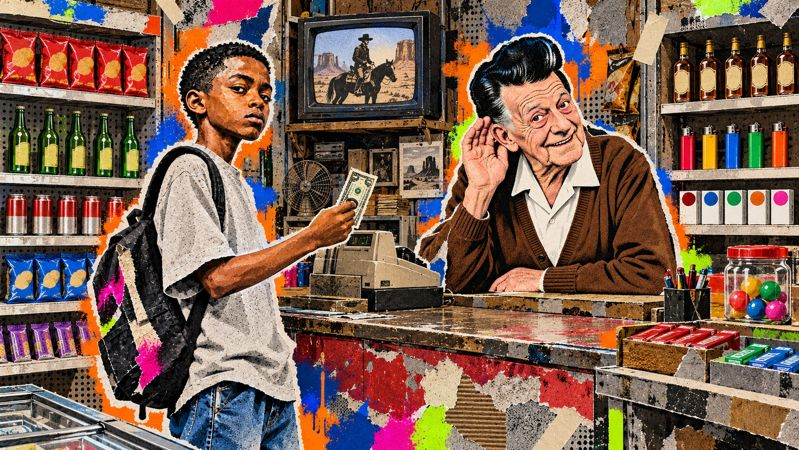
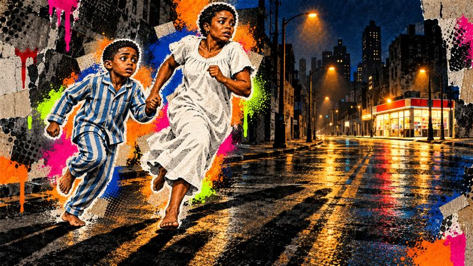
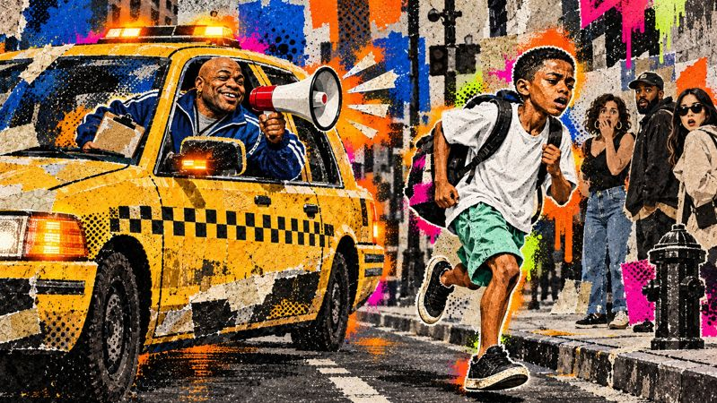
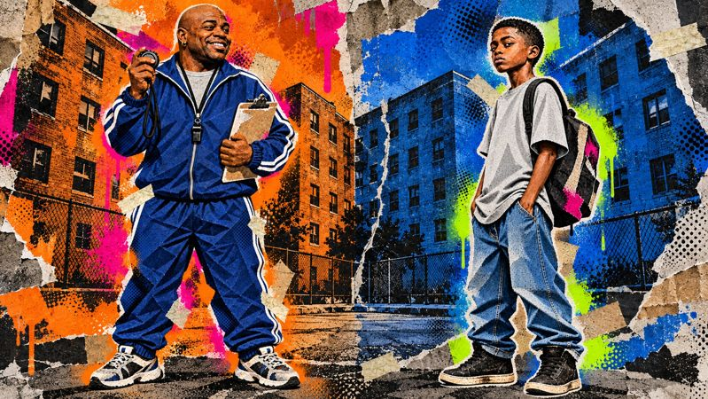
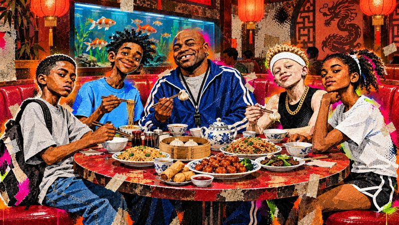
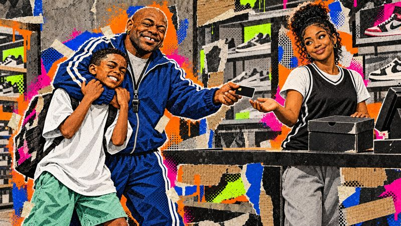

0:00
Cold open
The starting line at the first meet. Ghost freezes the moment: before this gun goes off, you need to know about the other one.
A 29-minute animated companion to Jason Reynolds' novel Ghost, with a chapter map, five discussion breaks, activities and content notes.
GHOST retells all ten chapters of the novel in Castle "Ghost" Cranshaw's own voice, in a street-art collage style. It pauses five times for short Track Breaks that each end on a discussion question.
Each film chapter covers the matching book chapter. Times are from the start of the video and match its chapter markers.
The starting line at the first meet. Ghost freezes the moment: before this gun goes off, you need to know about the other one.

Guinness records, Mr. Charles's store and the sunflower-seed ritual, Ghost's father. The night three years ago: the gunshot, running to Mr. Charles's, the stockroom, the 10-year sentence.
Ghost races Lu in jeans and high-tops, too close to call. Coach, the cab, Ma, and the deal: one mess-up at school and he's off the team.

The book's central question. See Track Breaks below.
17 hours and 2 minutes without a fight. Brandon, the cafeteria, the fake-uncle phone call. On the bench: "I got a lot of scream inside."
Punishment sprints (12.5, then 14 seconds), ladders, the untied lace, both shoes flying. Patty tells him Lu used to be called "Ghost." He cuts his high-tops down.
Symbols.
Shamika laughs, Ghost skips school, steals the silver shoes from Everything Sports, then gets stuck in Mr. Charles's stockroom.

The silver shoes, the long run, Coach's cab with the megaphone. Last place, but he doesn't quit. The lie to Coach.

Mentors.
Shamika apologizes, Ghost lets Brandon be, the cab ride to the newbie dinner.

Coach takes the utensils. Lu, Sunny, Patty and Ghost share secrets. Coach won Olympic gold.
Ghost defends Sunny. The SHOPLIFTER poster, the bench, Coach's story about his father. Run toward who you want to be. Cleaning the cab, apologizing to Tia, Coach pays.

Coach as mirror; fairness.
His own bedroom, Ma calls him "Ghost," power pills from Mr. Charles, Brandon in lane 8, Lu: "me and you." On your mark, get set, BOOM.
The open ending and the Track series. Credits follow at 29:04.
Each Track Break is under a minute and ends on a "Pause & Discuss" card. Pause the video when the card appears.
The central theme is running away versus running toward. Coach states it in Chapter 9: you can't run away from who you are, but you can run toward who you want to be.
| Idea | Where it shows up in the film (chapter) | Ask students |
|---|---|---|
| Running away vs. toward | The night with his father (1), the race with Lu (2), skipping school (5), the starting gun (10) | Which runs are away, which are toward, and when does it switch? |
| Fear and "scream inside" | The quote card (3), the stockroom panic (5), dressing in his old bedroom (10) | How does Ghost's fear change from Chapter 1 to Chapter 10? |
| Fathers and father figures | Ghost's father and the seeds (1); Coach's father, the medal and the photo (9) | Why does Coach still keep his father's photo? |
| Identity and naming | Castle vs. "Ghost" (2), Lu once called "Ghost" (4), Ma calls him Ghost for the first time (10) | Which name fits him by the end? |
| Honesty and consequences | The theft (5), the lie to Coach (6), the poster, the apology, Coach paying (9) | What did Ghost learn that the police never could have taught him? |
| Belonging | "For the first time... on a team" (2), the secrets dinner (8), "We are a team" (9) | What makes a group of people a team? |
| Sunflower seeds | The ritual with Mr. Charles, Dad's seeds (1), "power pills" on race day (10) | What do the seeds mean at the start vs. the end? |
| Shoes | High-tops, cut-downs, silver bullets, paid-for silver bullets (2–10) | What does each pair say about Ghost? |
| World records | Chapter titles as "world records," the record book, "one of the world's greatest" | Why does Reynolds title chapters this way? |
One viewing (30 minutes) plus a 40–50 minute discussion fits two class periods. These activities fit around it.
Students mark each run as away or toward and note what Ghost is feeling. Open the printable version.
From published chapter vocabulary lists for the novel (Ch. 1–3, Ch. 4–6, Ch. 7–10), plus track terms the film uses.
| Group | Words |
|---|---|
| Ch. 1–3 | altercation, pallet, suspension, disciplined, stance, jeer, arrogant, cocky, unfazed, exemplary |
| Ch. 4–6 | consequence, adrenaline, procrastinate, stethoscope, phlebotomy, paranoid, loiter, megaphone, reflex, coincidence |
| Ch. 7–10 | technically, karma, dominate, fugitive, motivated |
| Track | sprint, starting blocks, "on your mark / get set," ladders, long run, fartlek, lane, heat, PR (personal record) |
| Literary | symbol, motif, theme, first-person narrator, characterization, foil, mentor, open (cliffhanger) ending |
| Content | How the film handles it |
|---|---|
| Gun / domestic violence (Ch. 1, 10) | Told in narration with silhouettes: the father is a faceless shadow, the gunshot is a white flash and a muffled sound. No blood, no one hurt on screen. The starter's pistol at the end is shown as a starter's pistol. |
| Alcohol and drug addiction | Ghost's father's drinking is stated in one line. Coach's father's addiction, the medal sold for drugs and his death are told by Coach, not shown. The drug dealer at the basketball court (Ch. 7) is left out. |
| Bullying and fighting (Ch. 3) | Brandon's insults are kept. The fight is a stylized burst of milk, a tray and motion lines, with no injuries. |
| Theft and lying (Ch. 5–9) | Shown plainly, with the book's full consequences. |
| Poverty, albinism, disability | Kept as in the book. Lu's albinism and Patty's mother's amputations are named respectfully. |
| Ma's movie (Ch. 6) | The R-rated film Ma watches isn't named. |
The film keeps every major event in order but compresses about 180 pages into 30 minutes. All dialogue is reworded. Moments it shortens or leaves out make good "what did the film miss?" prompts:
Facts the film keeps exactly: Coach's medal is gold; Ghost's sprint times are 12.5 then 14 seconds; the shoes are size 9, from Everything Sports; Ghost runs in lane 6, Lu in lane 1, Brandon in lane 8 for the Bolts. The book never names Coach's Olympic event, and neither does the film.